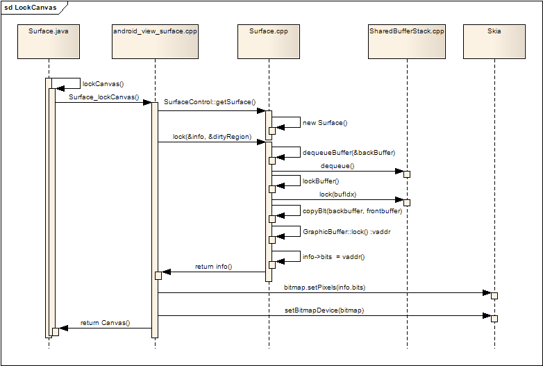
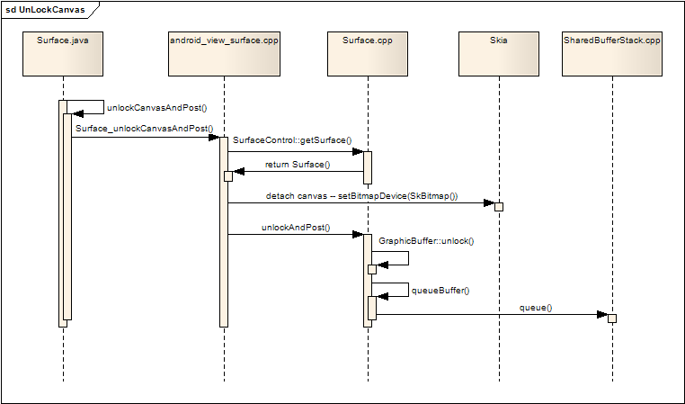

显示缓冲区的作用
概述
C++层的Surface实际是通过SurfaceHandle将Java层的Surface对象转换而来。该对象会锁定绘图
缓冲区以供绘图者进行绘图，之后解锁缓冲区再投递给SurfaceFlinger显示输出。
锁定显示缓冲区
-
虽然在SurfaceFlinger在创建Layer时已经为每个Layer申请了两个缓冲区，但是此时在JAVA层并看不到这两个缓冲区，JAVA层要想在Surface上进行画图操作，必须要先把其中的一个缓冲区绑定到Canvas中，然后所有对该Canvas的画图操作最后都会画到该缓冲区内。
-
Surface(java层)会先调用lockCanvas()来得到要进行画图操作的Canvas，lockCanvas会进一步调用native层的 Surface_lockCanvas，native代码利用Java层传入的SurfaceControl对象，通过getSurface()取得native层的 Surface对象，接着调用该Surface对象的lock()方法。
-
lock()返回了该Surface的信息，其中包括了可用缓冲区的首地址vaddr，该vaddr在Android的2D图形库Skia中，创建了一个bitmap，然后通过Skia库中Canvas的 API：Canvas.setBitmapDevice(bitmap)，把该bitmap绑定到Canvas中。
-
最后把这个Canvas返回给Java 层，这样JAVA层就可以在该Canvas上进行画图操作，而这些画图操作最终都会画在以vaddr为首地址的缓冲区中。

lockCanvas(Surface.java)
public Canvas lockCanvas(Rect dirty) throws OutOfResourcesException, IllegalArgumentException
{
/* the dirty rectangle may be expanded to the surface's size, if
* for instance it has been resized or if the bits were lost, since
* the last call.
*/
return lockCanvasNative(dirty);
}
Surface_lockCanvas(JNI)
static jobject Surface_lockCanvas(JNIEnv* env, jobject clazz, jobject dirtyRect)
{
// 通过SurfaceControl.getSurface()获取Surface对象
const sp<Surface>& surface(getSurface(env, clazz));
......
// 锁定缓冲区
Surface::SurfaceInfo info;
status_t err = surface->lock(&info, &dirtyRegion);
......
// 获取Java层的Canvas
jobject canvas = env->GetObjectField(clazz, so.canvas);
env->SetIntField(canvas, co.surfaceFormat, info.format);
// SKia图形库对象
SkCanvas* nativeCanvas = (SkCanvas*)env->GetIntField(canvas, no.native_canvas);
SkBitmap bitmap;
......
nativeCanvas->setBitmapDevice(bitmap);
......
nativeCanvas->clipRegion(clipReg);
int saveCount = nativeCanvas->save();
env->SetIntField(clazz, so.saveCount, saveCount);
......
// 返回Java层的Canvas对象
return canvas;
}
Surface::lock(C++)
status_t Surface::lock(SurfaceInfo* other, Region* dirtyIn, bool blocking)
{
......
android_native_buffer_t* out;
// 分配新的内存空间并将其加入缓冲队列，返回给out
status_t err = dequeueBuffer(&out);
if (err == NO_ERROR) {
// 从刚才得到的buffer创建GraphicBuffer对象，
// 该对象是用来更新显示的缓冲区，叫做背景缓冲区。
// 重画动作在背景缓冲区进行。
sp<GraphicBuffer> backBuffer(GraphicBuffer::getSelf(out));
// 锁定这片内存
err = lockBuffer(backBuffer.get());
if (err == NO_ERROR) {
const Rect bounds(backBuffer->width, backBuffer->height);
const Region boundsRegion(bounds);
Region scratch(boundsRegion);
// newDirtyRegion是需要重画的区域
Region& newDirtyRegion(dirtyIn ? *dirtyIn : scratch);
newDirtyRegion &= boundsRegion;
// 已经显示出来的frontBuffer叫做前景缓冲区
// 判断是否需要拷贝frontBuffer到backBuffer
const sp<GraphicBuffer>& frontBuffer(mPostedBuffer);
const bool canCopyBack = (frontBuffer != 0 &&
backBuffer->width == frontBuffer->width &&
backBuffer->height == frontBuffer->height &&
backBuffer->format == frontBuffer->format &&
!(mFlags & ISurfaceComposer::eDestroyBackbuffer));
mDirtyRegion = newDirtyRegion;
// 如果需要做拷贝动作，则将frontBuffer中非newDirtyRegion区域
// 拷贝到backBuffer中
if (canCopyBack) {
const Region copyback(mOldDirtyRegion.subtract(newDirtyRegion));
if (!copyback.isEmpty())
copyBlt(backBuffer, frontBuffer, copyback);
} else {
// 如果不需要拷贝，则重画整个区域
newDirtyRegion = boundsRegion;
}
mOldDirtyRegion = newDirtyRegion;
// 锁定将要画图的缓冲区，并返回一个地址给调用者
void* vaddr;
status_t res = backBuffer->lock(
GRALLOC_USAGE_SW_READ_OFTEN | GRALLOC_USAGE_SW_WRITE_OFTEN,
newDirtyRegion.bounds(), &vaddr);
// 返回给SurfaceInfo参数other
mLockedBuffer = backBuffer;
other->w = backBuffer->width;
other->h = backBuffer->height;
other->s = backBuffer->stride;
other->usage = backBuffer->usage;
other->format = backBuffer->format;
other->bits = vaddr;
}
}
mApiLock.unlock();
return err;
}
Surface::dequeueBuffer(C++层)
int Surface::dequeueBuffer(android_native_buffer_t** buffer)
{
......
// 与Server端同步
ssize_t bufIdx = mSharedBufferClient->dequeue();
if (bufIdx < 0) {
return bufIdx;
}
// grow the buffer array if needed
const size_t size = mBuffers.size();
const size_t needed = bufIdx+1;
if (size < needed) {
mBuffers.insertAt(size, needed-size);
}
uint32_t w, h, format, usage;
if (needNewBuffer(bufIdx, &w, &h, &format, &usage)) {
err = getBufferLocked(bufIdx, w, h, format, usage);
if (err == NO_ERROR) {
// reset the width/height with the what we get from the buffer
const sp<GraphicBuffer>& backBuffer(mBuffers[bufIdx]);
mWidth = uint32_t(backBuffer->width);
mHeight = uint32_t(backBuffer->height);
}
}
// if we still don't have a buffer here, we probably ran out of memory
const sp<GraphicBuffer>& backBuffer(mBuffers[bufIdx]);
if (!err && backBuffer==0) {
err = NO_MEMORY;
}
if (err == NO_ERROR) {
mDirtyRegion.set(backBuffer->width, backBuffer->height);
*buffer = backBuffer.get();
} else {
mSharedBufferClient->undoDequeue(bufIdx);
}
return err;
}
释放显示缓冲区
-
画图完成后，要想把Surface的内容显示到屏幕上，需要把Canvas中绑定的缓冲区释放，并且把该缓冲区从变成可投递(因为默认只有两个 buffer，所以实际上就是变成了frontBuffer)，SurfaceFlinger的工作线程会在适当的刷新时刻，把系统中所有的 frontBuffer混合在一起，然后通过OpenGL刷新到屏幕上。
-
Java层Surface调用unlockCanvasAndPost
-
native代码：Surface_unlockCanvasAndPost
-
native代码利用Java层传入的SurfaceControl对象，通过getSurface()取得C++层的Surface对象
-
绑定一个空的bitmap到Canvas中
-
调用Surface(C++层)的unlockAndPost方法
-
调用GraphicBuffer的unlock()，解锁缓冲区
-
在queueBuffer()调用了SharedBufferClient的queue()，把该缓冲区更新为可投递状态
-
SurfaceFlinger的渲染线程looper在条件信号上等待事件触发，如果需要更新，则会通过Framebuffer驱动做更新动作。

unlockCanvasAndPost(Java层)
public native void unlockCanvasAndPost(Canvas canvas);
Surface_unlockCanvasAndPost(JNI)
static void Surface_unlockCanvasAndPost(
JNIEnv* env, jobject clazz, jobject argCanvas)
{
jobject canvas = env->GetObjectField(clazz, so.canvas);
......
const sp<Surface>& surface(getSurface(env, clazz));
if (!Surface::isValid(surface))
return;
// 从Java层获取Canvas对象并转换成SkCanvas
SkCanvas* nativeCanvas = (SkCanvas*)env->GetIntField(canvas, no.native_canvas);
int saveCount = env->GetIntField(clazz, so.saveCount);
nativeCanvas->restoreToCount(saveCount);
nativeCanvas->setBitmapDevice(SkBitmap());
env->SetIntField(clazz, so.saveCount, 0);
// 解锁缓冲区并通过投递动作更新状态
status_t err = surface->unlockAndPost();
if (err < 0) {
}
}
Surface::unlockAndPost(C++层)
status_t Surface::unlockAndPost()
{
if (mLockedBuffer == 0) {
return INVALID_OPERATION;
}
status_t err = mLockedBuffer->unlock();
err = queueBuffer(mLockedBuffer.get());
mPostedBuffer = mLockedBuffer;
mLockedBuffer = 0;
return err;
}
Surface::queueBuffer(C++层)
int Surface::queueBuffer(android_native_buffer_t* buffer)
{
status_t err = validate();
if (err != NO_ERROR)
return err;
if (mSwapRectangle.isValid()) {
mDirtyRegion.set(mSwapRectangle);
}
int32_t bufIdx = getBufferIndex(GraphicBuffer::getSelf(buffer));
......
mSharedBufferClient->setTransform(bufIdx, mNextBufferTransform);
mSharedBufferClient->setCrop(bufIdx, mNextBufferCrop);
mSharedBufferClient->setDirtyRegion(bufIdx, mDirtyRegion);
// 更新缓冲区
err = mSharedBufferClient->queue(bufIdx);
if (err == NO_ERROR) {
// 通过Binder调用SurfaceFlinger.signal方法
mClient.signalServer();
}
return err;
}
{kind=link}
{kind=link}